Quantum Biology Atlas
Identifier-bound pathway maps of the places where weak magnetic fields could plausibly act in a cell — each node carrying its quantum chemistry, its supporting citations, and an explicit statement of how much is actually known.
Companion software to the review “Plant Responses to Near-Null Magnetic Fields: Geomagnetism, Bioenergetics, and Primary Metabolism in Arabidopsis and Brassica” (D. M. Porterfield & R. Barker, Purdue University).
- 10 pathway maps
- 126 annotated nodes
- 125 Arabidopsis loci
- 42 verified references
Two questions, kept apart
The ontology exists because these are different questions, and collapsing them is how “contains a flavin” quietly becomes “is magnetically sensitive”:
| Axis | Question |
|---|---|
quantum_class | What chemistry does this entity carry? Structural, and largely uncontroversial. |
evidence_tier | How much is actually known about its magnetic-field sensitivity? This is where the claims live. |
A tier that asserts a demonstrated or inferred field effect cannot validate without a resolved DOI. The tier is drawn as a border style on every map, so a hypothesis looks provisional on the page:
| Tier | Meaning | Nodes |
|---|---|---|
T1 | Demonstrated A field was applied and an effect measured on this entity. | 4 |
T2 | Inferred Shown for the containing complex or process, not the entity itself. | 31 |
T3 | Plausible A physical route exists; no field measurement has been made. | 44 |
T4 | Context Structural context; no quantum claim. | 47 |
The maps are mostly dashed, and that is the finding. 44 of 126 nodes carry a plausible physical route with no field measurement behind them. The Arabidopsis near-null-field literature is developmental and nutritional; it has not yet measured a respiratory complex directly. No base map encodes a quantitative value — numbers appear only when measured data is projected onto one.
The maps
Each map compiles from a declarative source with no coordinates in
it — box geometry is derived from measured text, which is what stops a label
outgrowing its box. Every map is published as SBGN-ML (Process
Description) so it opens in Newt, VANTED, CySBGN and the
SBGN Pathway Visualizer, with the quantum annotation carried in
<extension> blocks that other renderers safely ignore.
{kind=link}

{kind=link}

{kind=link}

{kind=link}

{kind=link}

{kind=link}

{kind=link}

{kind=link}

{kind=link}

{kind=link}

Cross-species projection
The ontology is anchored on Arabidopsis, because that is where the near-null-field literature is. Projecting onto another organism runs two independent orthology backbones and reports where they disagree, rather than silently preferring one:
- Ensembl Compara
pan_homology— the only division that crosses kingdoms. Theplantsdivision does not reach animals at all. - OrthoDB v12 — the committed human-anchored matrix from OSDR_X-species_V2.
Projecting the atlas's 125 loci to human maps 68, with both backbones agreeing on 22 and disagreeing on 0. The other species run on Ensembl alone (mouse 64/125, fly 63/125, worm 61/125, yeast 68/125) because the committed OrthoDB matrix is human-anchored — stated rather than left to look like two-method corroboration. The unmapped set is the validation: the alternative oxidase and type II NAD(P)H dehydrogenase loci fail to map, which is correct, because humans have neither. A projection that matches nothing raises rather than returning an empty frame that would render as a blank map.
Demonstrations
Each page projects real measurements onto the maps and states its provenance class,
because the three available kinds of data do not carry equal weight:
genelab_processed (NASA's own pipeline), depositor_normalised
(the depositors' ratios, no model fitted) and published_results (numbers
read out of a paper's supplementary tables, because nothing was deposited).
26 loci, 6 timepoints across 2 tissues, 196 values — 7 of them on atlas nodes. The first overlay in this atlas to carry time rather than a single snapshot.
Provenance: published_results. No raw data
was deposited; the Data Availability Statement reads
“no Data Availability Statement is present in the article; the quantitative data appear only as main-text tables”.
21 loci, 1 timepoints across 1 tissues, 21 values — 4 of them on atlas nodes. The first overlay in this atlas to carry time rather than a single snapshot.
Provenance: published_results. No raw data
was deposited; the Data Availability Statement reads
“Data will be made available on request”.
194 loci, 7 timepoints across 2 tissues, 2,716 values — 12 of them on atlas nodes. The first overlay in this atlas to carry time rather than a single snapshot.
Provenance: published_results. No raw data
was deposited; the Data Availability Statement reads
“Data are available as supplementary tables and further data can be provided upon request”.
Drop a differential-expression table and see it projected onto any map, with the orthology run for you if it is not Arabidopsis. Nothing is uploaded — the file is read in your browser and joined against the catalogue that ships with this site.
It carries the same refusals as the generated figures: an empty join stops with an explanation rather than drawing a blank map, coverage below 25% warns and states the number, and a namespace that cannot reach your chosen species is caught before the join rather than after. It also names the nodes that collapse onto a shared gene.
A dose × time radiation course in Arabidopsis (2 doses, 4 timepoints, 123 atlas loci), asked against the magnetic-field studies. Radiation is not a field regime and the page does not treat it as one — the question is overlap.
2 of 11 shared loci respond to both radiation and a near-null field in the same direction. Reported as a lead, not a result: eleven loci is too few to test, and the page says so rather than computing a p-value that would look like evidence.
It also forced a check the atlas lacked: under radiation almost every multi-locus node has loci that disagree in sign, so a node's single trace can be the aggregator choosing between genes doing different things. The AOX family is the worked case.
The cleanest field-only contrast in the atlas: 1g inside the magnet against 1g outside it, in Arabidopsis, at 100% node coverage on every map. The study also carries gravity controls that use no magnet at all.
And the result that constrains every other page: the atlas's 125 loci move no more than 29,202 random loci from the same array (p = 0.71). Selecting for quantum chemistry did not select for field responsiveness here, and the page says so.
Provenance: depositor_normalised — the
depositors' normalised ratios, no model fitted, so no significance is shown.
The cross-species bridge doing real work: 63 of 125 atlas
loci reach the fly, and Arabidopsis CRY1 lands on Drosophila cry,
the canonical animal magnetoreceptor. Of 420 contrasts, 5 isolate
the field from the gravity the levitation also changes.
The result is null and reported as one: none of the 15 nodes with data moves the same way in all 5 contrasts. The page also states what the projection destroys — on the cryptochrome map three distinct nodes collapse onto one fly gene.
Provenance: genelab_processed, and a
strong-field study — the opposite end of the axis from the review.
A pre-registered test, and why it could not settle anything
The hypothesis, null, data sources and confounds were committed before the script was run. The question: are human orthologs carrying spin-bearing cofactors over-represented among genes conserved-suppressed across six species in spaceflight?
| carries a spin cofactor | does not | |
|---|---|---|
| conserved down | 13 | 330 |
| conserved up | 6 | 241 |
Odds ratio 1.582 (95% CI 0.587–3.925), Fisher exact p = 0.48 — fail to reject the null. Iron-sulfur chemistry specifically, the mechanism the review argues hardest for, gives an odds ratio of 0.90.
That negative result settles nothing, and saying so is the point. Simulation on the realised marginals puts the minimum detectable odds ratio at 4.0 for 80% power; a genuine doubling of odds would have been missed three times in four.
Three structural reasons this dataset cannot answer the question: only 19 of 590 directional genes carry a spin-bearing cofactor; the mitochondrial stratum has no contrast at all, because every conserved mitochondrial gene in the table is suppressed and none is up-regulated; and spaceflight bundles microgravity, ionising radiation and a hypomagnetic environment, so attribution to the magnetic component was never available. The result strengthens the review's own call for direct bioenergetic measurements under controlled conditions.
Full report · Machine-readable result
Things found by building it
A curated study database whose DOIs were mostly wrong
Every DOI in the companion repository's nnmf_study_database.csv was
resolved against CrossRef: only 7 of 49 title-match. Its Belyavskaya
row cites a paper on calcium gradients in the fish inner ear. The manuscript's own
bibliography, by contrast, is clean — 42 of 42 resolve and title-match —
so the evidence base here is built from the bibliography, re-verified on every run,
and the build refuses to write its output if any reference fails.
Gene symbols are not safe to type
Resolving every symbol against Ensembl during authoring caught five collisions that
would each have put the wrong gene on a map: ACO2 returns ACC oxidase 2
rather than aconitase 2, LIP1 a lipase rather than lipoyl synthase,
CAT2 and CAT3 cationic amino acid transporters rather than
catalases, and KAT2 a potassium channel rather than the thiolase. The
ontology stores loci, never symbols.
A cofactor table with no iron-sulfur entries
The KEGG-derived cofactor mapping in OSDR_X-species_V2 contains zero
iron-sulfur entries despite its generating script listing Fe-S among the cofactors to
map, and only 5 heme and 10 FMN genes genome-wide. The script skips any cofactor whose
cache file is missing without reporting the skip. UniProt/Swiss-Prot was used instead,
which curates 71 human Fe-S proteins.
Figure legibility as a test, not a review step
The review draft carries the margin note “the text spills out of the box's… and the TCA cycle needs some work”. Both are fixed structurally: boxes are sized around measured text so a label cannot overflow by construction, and the TCA cycle is redrawn as an actual closed cycle. A browser-side probe then measures what was really painted — using the browser's own text layout rather than re-running the compiler's arithmetic — and asserts no overflow, no overlapping boxes or compartment bands, nothing clipped, and a caption that states provenance. All ten maps pass across 1,447 elements.
Using the atlas
The published catalogue is catalog/manifest.json:
a flat, self-describing list of every map with its SBGN URL and a per-node annotation
sidecar carrying evidence tier, quantum class and citations — so a consumer can draw
the tier channel without parsing SBGN extensions.
pip install pyyaml matplotlib scipy
PYTHONPATH=src python3 -c "
from qbio import ontology, maps
onto = ontology.load()
for r in maps.compile_all(onto):
print(r['id'], r['nodes'], 'nodes', r['tiers'])"Project a NASA OSDR contrast onto a map:
PYTHONPATH=src python3 -c "
from qbio import ontology, maps, osdr, project
onto = ontology.load()
spec = maps.load_spec('maps/src/QBM-01_mitochondrial_etc.yaml')
nodes = [(n, onto.get(spec.nodes.get(n, {}).get('qbo',''))) for n in spec.node_ids]
table = osdr.load_contrast(38, contrast='(FLT)v(GC)')
proj = project.project_expression(map_id=spec.id, nodes=nodes, table=table)
print(proj.summary())"